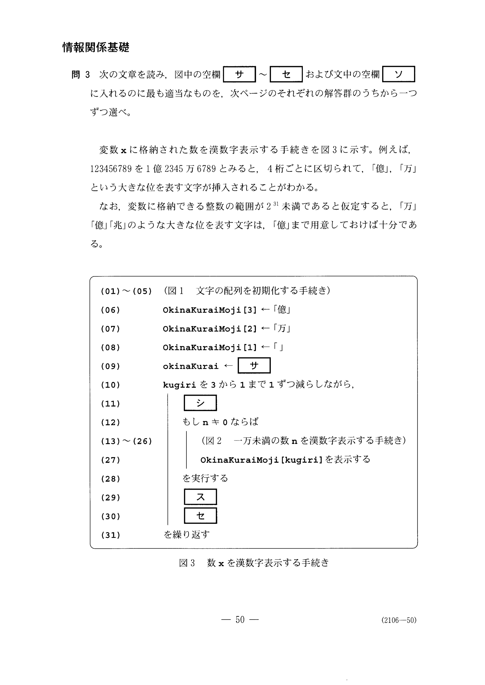
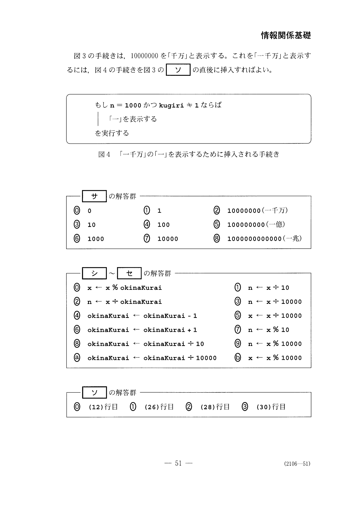

2010年度 情報関係基礎 第３問 問3#


第3問
問３
次の文章を読み、 図中の空欄【サ】〜【セ】および文中の空欄【ソ】に入れるのに最も適当なものを、 次ページのそれぞれの解答群のうちから一つずつ選べ。
変数xに格納された数を漢数字表示する手続きを図３に示す。
例えば、123456789を１億２３４５万６７８９とみると、
4桁ごとに区切られて、「億」、「万」という大きな位を表す文字が挿入されることがわかる。
なお、変数に格納できる整数の範囲が\(2^31\)未満であると仮定すると、 「万」「億」『兆」のような大きな位を表す文字は、「億」まで用意しておけば十分である。
(01)〜(05) (図1 文字の配列を初期化する手続き)
(06) OkinaKuraiMoji[3] ← 「億」
(07) OkinaKuraiMoji[2] ← 「万」
(08) OkinaKuraiMoji[1] ← 「」
(09) okinaKurai ← 【サ】
(10) kugiriを3から1まで1ずつ減らしながら，
(11) | 【シ】
(12) | もしn ≠ 0ならば
(13)〜(26) | (図2 一万未満の数nを漢数字表示する手続き)
(27) | OkinaKuraiMoji[kugiri]を表示する
(28) | を実行する
(29) | 【ス】
(30) | 【セ】
(31) を繰り返す
図３の手続きは、10000000を「千万」と表示する。 これを「一千万」と表示するには、 図４の手続きを図３の【ソ】の直後に挿入すれば良い。
もし n = 1000 かつ kugiri ≠ 1 ならば
| 「一」を表示する
を実行する
0110_000_000(一千万)10100100_000_000(一億)1_00010_0001_000_000_000_000(一兆)
x = x % okinaKurain = x ÷ 10n = x ÷ okinaKurain = x ÷ 10_000okinaKurai = okinaKurai - 1x = x ÷ 10_000okinaKurai = okinaKurai + 1n = x % 10okinaKurai = okinaKurai ÷ 10n = x % 10_000okinaKurai = okinaKurai ÷ 10_000x = x % 10_000
(12)行目
(26)行目
(28)行目
(30)行目
解答#
%%ai vioras
今から擬似コードでプログラミングしますが、擬似コードの実行環境はありません。
あなたが提示するコードを検証するためPythonのプログラムコードも同時に提示して下さい。
参考#
問題番号 (配点) |
設問 |
解答記号 |
正解 |
配点 |
備考 |
|---|---|---|---|---|---|
第３問 (35) |
3 |
サ |
5 |
2 |
|
シ |
2 |
2 |
|
||
ス |
0 |
3 |
|
||
セ |
a |
3 |
|
||
ソ |
0 |
2 |
(12)行目 |
問３ １万以上の場合も含めた漢数字表示を行う手続きを題材に、手続きを読み取り構成する 能力を問う問題である。提示された手続きの一部として前問の手続きがそのまま使われており、本問の手続きを見通しよく読み取るには、この部分を一つのモジュールとして理解することが望ましい。 前問の１桁ずつ取り出す手続きは常套手段であるとの意見もいただいているが、本問では応用的に数を４桁ずつ取り出す手続きを構成させる設問となっている。 なお、\(2^{31}\)と「億」についての説明は、手続きを設計する際に留意すべき点であることから、述べたものである。 また、この第３問のような手続きを構成する問題では、他の試験問題と異なり、試験後に実際に動作させて試してみる受験者がいる可能性もある。現在最も普及している計算機における整数の扱いに合わせて、約20億までの値でしか正しく動作しないことを何らかの形で伝えておく必要もあるものと考えられる。
試験結果の統計情報を見ると、okinaKurai の初期値や整数除算によって上位桁を取り出す部分については、全体で約３～４割、ほぼ予想したとおりの正答率となった。
しかし、okinaKuraiとｘを更新する[ス]・[セ]については、全体で約２割と予想よりも低い正答率であった。誤答の中では、10 との除算を選択した者も多く、４桁ごとに区切らねばならないことを理解していないようにも思われる。
また、問３の設問はいずれも１割以上がノーマークであり、解答に至らなかった者が若干多かったようである。その理由としては、問２の手続きの理解に時間がかかったのではないかとも思われる。